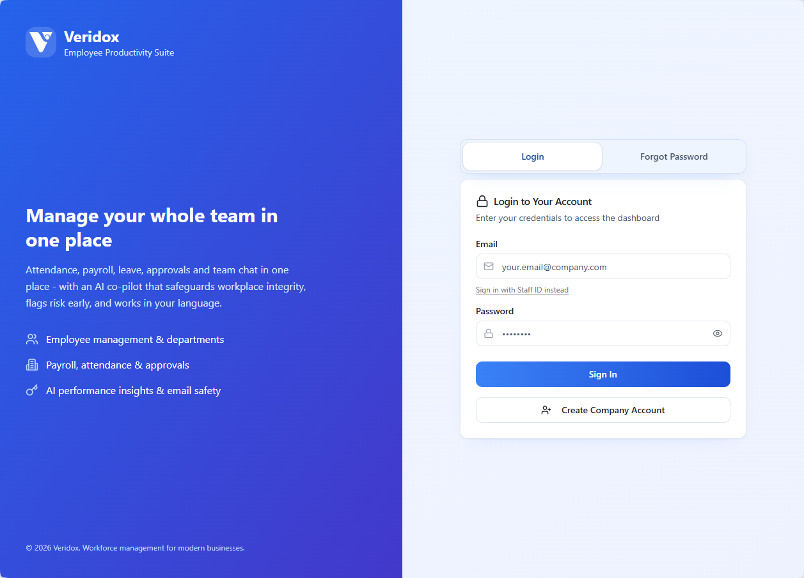
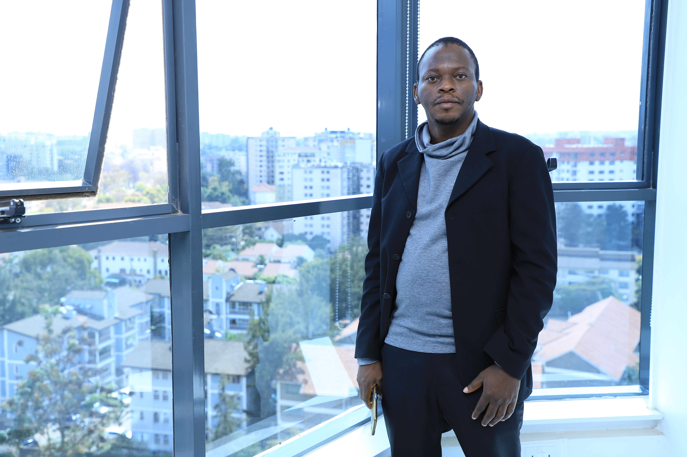

Veridox / Product management & designA clearer way to
A clearer way to
manage a growing team.
Bringing people, attendance, approvals and payroll into one role-aware workspace.
Live productExplore the case studyI connect product strategy, thoughtful design and practical AI to make complicated work feel simple.
Veridox brings everyday people operations into one shared workspace.
Inside the Veridox project
Product strategy / UX / AI
A closer look at the products, decisions and details behind the work.
Bringing people, attendance, approvals and payroll into one role-aware workspace.
Live productExplore the case studyI stay involved from the first conversation to the details that make a product useful.
Talk to the people closest to the problem. Map the workflow, constraints and decisions that matter.
Discovery · Research · Problem definitionTurn what we learn into priorities, flows and prototypes that people can challenge and improve.
Strategy · Scope · Product designWork through implementation and handoff. Use real feedback to decide what to improve next.
Delivery · AI integration · Iteration
I’m Mohammed. My work connects product management, AI integration and hands-on design.
Experience across digital products, brand systems and physical spaces helps me see both the larger system and the small details people interact with.
More about my approachTell me what you are building, who it is for, and where you are getting stuck.